Facebookفتح على فيسبوك ↖
دكتوراه في إدارة الأعمال · إدارة سلسلة التوريد
د. سلسل صادق كنعان
معاون العميد للشؤون العلمية والإدارية، كلية الإدارة والاقتصاد، جامعة المأمون - بغداد
أكاديمي متخصص في إدارة سلسلة التوريد، أجمع بين القيادة الجامعية والتدريس والبحث العلمي والعمل التشغيلي في الصناعة. أنشر في تكامل سلسلة التوريد ودور الذكاء الاصطناعي في شفافيتها والتحول الرقمي، في مجلات مفهرسة في قاعدة سكوبس.
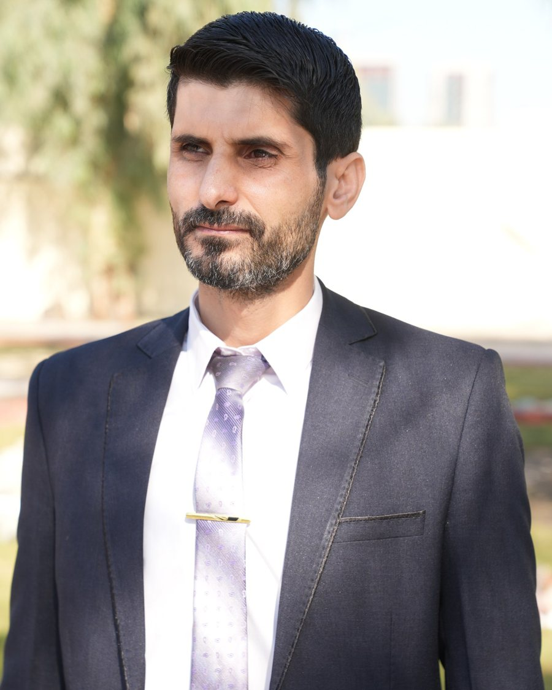
مدرس دكتوريعادل أستاذ مساعد
17بحثاً وفصلاً منشوراً
7منشورات في سكوبس ودار IGI Global
+10سنوات في التدريس الجامعي
132موظفاً في مصنع أدرت عملياته
لمحة سريعة
القيادة الأكاديمية
معاون العميد حالياً، ورئيس قسم المالية والمصرفية سابقاً (نحو 345 طالباً و10 أساتذة)، وعضو اللجنة المركزية لنظام بولونيا.
المزيد ←البحث العلمي
17 بحثاً منشوراً، منها مقالات في مجلات مفهرسة في سكوبس، إضافة إلى إدارة تحرير مجلات علمية محكّمة.
المزيد ←الخبرة الصناعية والاستشارية
مدير عمليات لمصنع يضم 132 موظفاً وثلاثة خطوط إنتاج، وخبير دراسات جدوى، ومنسق مشاريع تقنية لشركات في ألمانيا وكندا والإمارات.
المزيد ←مجالات الخبرة
إدارة سلسلة التوريداللوجستيات وإدارة الإمداداتإدارة المخزونالمشتريات والتوريدإدارة الجودة ISO 9001دراسات الجدوىإدارة المشاريعالمالية والمصرفيةالتسويقالذكاء الاصطناعي في سلاسل الإمدادالتحول الرقمينظام بولونيا والقيادة الأكاديميةمناهج البحث والنشر العلمي
السيرة الذاتية
تحميل السيرة الذاتيةالسيرة الذاتية
المؤهلات العلمية، والمناصب الأكاديمية، والخبرة التدريسية والمهنية.
المؤهلات العلمية
دكتوراه
دكتوراه في إدارة الأعمال، اختصاص إدارة سلسلة التوريد
الأطروحة: دور تكامل سلسلة التوريد في أداء الشركة، دراسة مسحية على شركات الأدوية في سوريا.
ماجستير
ماجستير في إدارة الأعمال
الرسالة: دور القيادة الإدارية في إدارة الأزمات، دراسة على المنظمات السياحية في الساحل السوري.
إجازة
إجازة في الاقتصاد، اختصاص إدارة الأعمال
القيادة والإدارة الأكاديمية
معاون العميد للشؤون العلمية والإدارية
أيلول 2026 - حتى الآنكلية الإدارة والاقتصاد، جامعة المأمون، العراق
- التخطيط الأكاديمي: وضع الخطط التعليمية، وتنسيق الجداول الدراسية، والإشراف على تنفيذ الأقسام للخطط.
- إدارة الامتحانات النهائية واستلام أوراقها وتسليمها، والإشراف على إعلان الدرجات.
- رئاسة لجنة الانضباط واللجان الإدارية المختلفة في الكلية.
- الإشراف على الأنشطة الطلابية والإرشاد النفسي للطلبة.
رئيس قسم المالية والمصرفية
أيلول 2025 - أيلول 2026جامعة المأمون، العراق
- قيادة قسم يضم نحو 345 طالباً وعشرة أساتذة، وإدارة شؤونه الأكاديمية والإدارية.
- الإشراف على نظام المعلومات الطلابية وتطبيق نظام بولونيا ومتابعة الطلبة وفق متطلباته.
- تنظيم التدريب العملي للطلبة، والحملات التطوعية، والرحلات والأنشطة الطلابية.
- تنسيق الاتفاقيات والمؤتمرات مع الجامعات الماليزية بتوجيه من رئاسة الجامعة.
عضو لجنة الشراء والتوريد
أيلول 2025 - أيلول 2026جامعة المأمون، العراق
- وضع آلية الشراء في الجامعة ومتابعة احتياجات الأقسام.
- التعامل مع نحو عشرين مورداً سنوياً واستقطاب العروض واستكشاف السوق، بالتنسيق مع القسم المالي والمستودعات.
عضو اللجنة المركزية لنظام بولونيا
من 2023 إلى 2025جامعة المأمون، العراق
- المشرف المباشر على تطبيق نظام بولونيا في قسم المحاسبة.
الخبرة التدريسية
مدرس جامعي، قسم إدارة الأعمال
تشرين الثاني 2023 - أيلول 2025جامعة المأمون، العراق
- المقررات: إدارة الإمدادات، إدارة التخزين، مبادئ الإدارة، مبادئ التسويق، بحوث التسويق، مبادئ الإحصاء، مناهج وأخلاقيات البحث العلمي، قراءات إدارية ومالية باللغة الإنجليزية، الحاسوب.
- الإشراف على أربع إلى خمس مجموعات من مشاريع التخرج سنوياً.
- عضو اللجنة العلمية ولجنة الإرشاد في قسم المالية والمصرفية.
عضو هيئة تدريسية، قسم إدارة الأعمال
2022 - تشرين الأول 2023جامعة طرطوس، سوريا
- المقررات: اتجاهات حديثة في التسويق (ماجستير)، إدارة سلسلة التوريد، إدارة الجودة، التنمية الإدارية، الإدارة المالية، خدمة العملاء، إدارة الموارد البشرية، دراسات الجدوى الاقتصادية.
- التدريس في الدراسات العليا.
محاضر جامعي، كلية السياحة
ابتداءً من 2015جامعة طرطوس، سوريا
- المقررات: محاسبة التكاليف، إدارة الأزمات، بحوث الأسواق السياحية، التسويق السياحي.
الخبرة العملية والاستشارية
مدير مشروع تقني (عن بُعد)
كانون الثاني 2023 - نيسان 2023منصة مرحبا، كندا
- إدارة فريق تحرير موقع مقالات، وإدارة تصميم منصة تجارة إلكترونية عقارية وتطبيق إعلاني ولعبة إلكترونية.
خبير دراسات جدوى
أيار 2022 - كانون الثاني 2023بالتعاون مع مكتب استشاري في أبوظبي، الإمارات
- إعداد دراسات جدوى لمشاريع استثمارية، منها دراسة توسعة مركز صيانة مركبات لشركة غرين ماونتنز للخدمات البيئية.
منسق مشاريع ومشرف مبيعات (عن بُعد، دوام كامل)
2021 - 2022شركة داستن لحلول تكنولوجيا المعلومات (DASTN)، برلين، ألمانيا
- تسليم المشاريع التقنية (تطبيقات ومواقع وبرامج) بالتنسيق بين المورد التقني والعميل.
- توجيه فريق المبيعات، وجذب العملاء، وإعداد العروض الفنية والمالية، وإدارة التعاقد.
مدير العمليات (دوام كامل)
نيسان 2018 - 2021الشركة الابتكارية لصناعة مستحضرات التجميل، طرطوس، سوريا
- الإشراف على مصنع يضم 132 موظفاً وثلاثة خطوط إنتاج: الكريمات، والسوائل والمعقمات، والشامبو.
- تنفيذ قرارات مجلس الإدارة والخطة الاستثمارية، وضمان خطة الإنتاج وجاهزية الموارد.
- ضمان تطبيق نظام إدارة الجودة وفق المواصفة ISO 9001:2015.
- التنسيق بين مديري المحاسبة والتسويق والإنتاج والمخازن.
مسوّق (دوام جزئي)
نيسان 2016 - نيسان 2017المركز السوري البريطاني للتدريب، طرطوس
- التسويق للدورات التدريبية بين طلبة الجامعة عبر وسائل التواصل الاجتماعي، والمشاركة في تقديمها.
الأبحاث
الأبحاث والمنشورات
بحوث منشورة في مجلات مفهرسة في سكوبس ومجلات عربية ودولية محكّمة، في سلسلة التوريد والذكاء الاصطناعي والتسويق والإدارة.
الاهتمامات البحثية
تكامل سلسلة التوريدالذكاء الاصطناعي وشفافية سلسلة الإمدادإنترنت الأشياء والبيانات الضخمةالتحول الرقميالذكاء التسويقي وتجربة العميلالمدن الذكية وحوكمة البياناتالقيادة وإدارة الأزمات
قائمة المنشورات (17)
- 2026
Analysing the critical role of data governance in shaping Iraq's smart city future
تحليل الدور الحاسم لحوكمة البيانات في تشكيل مستقبل المدن الذكية في العراق
Jebur, M. A., Kanaan, S. S., & Assaad, A. S.
International Journal of Business Information Systems, 51(8), 1–18
- 2026
Assessing customer trust in AI-driven marketing: Strategies for enhanced customer experience
تقييم ثقة العملاء في التسويق المدعوم بالذكاء الاصطناعي: استراتيجيات لتعزيز تجربة العميل
Assaad, A. S., Abdullah, S. N., Kanaan, S. S., & Mohssen, R.
In Mitigating Risk and Building Customer Trust Through Responsible AI Practices in Marketing. IGI Global Scientific Publishing
- 2025
Supply chain integration based on big data, Internet of Things, marketing intelligence, and knowledge sharing: A case study of Snowa Company in Iran
تكامل سلسلة الإمداد استناداً إلى البيانات الضخمة وإنترنت الأشياء وذكاء السوق وتبادل المعرفة: دراسة حالة شركة سنوا في إيران
Assaad, A. S., & Kanaan, S. S.
Supply Chain Forum: An International Journal
- 2025
The impact of artificial intelligence on supply chain visibility and decision-making
أثر الذكاء الاصطناعي في تحسين شفافية سلسلة الإمداد ودعم اتخاذ القرار
Kanaan, S. S., Zreqa, W., Mhanna, B., Assaad, A., & Ali, H.
International Journal of Logistics Systems and Management
- 2025
Sustained competitive advantage based on Internet of Things, marketing intelligence, customer experience management, and innovation capability: A case study of Snowa Company
الميزة التنافسية المستدامة القائمة على إنترنت الأشياء والذكاء التسويقي وإدارة تجربة العملاء وقدرة الابتكار: دراسة حالة شركة سنوا
Assaad, A., Kanaan, S. S., & Ghanem, L.
International Journal of Business Excellence
- 2025
Determinants of engagement with health insurance mobile apps to enhance the quality of life
محددات التفاعل مع تطبيقات التأمين الصحي على الهاتف المحمول لتعزيز جودة الحياة
Omran, W., & Kanaan, S. S.
International Journal of Applied Management Science
- 2025
The impact of virtual experience marketing in exploiting customer needs to enhance interaction and ensure brand loyalty: A case study of a home appliances and electronics company
أثر تسويق التجربة الافتراضية في استغلال حاجات الزبون لتعزيز التفاعل وضمان الولاء للعلامة التجارية: دراسة حالة على شركة للأجهزة المنزلية والإلكترونيات
Mohammed, N. Q., Saadi, S. N., Mohammed, S. K., & Kanaan, S. S.
International Journal of Humanities Education
- 2025
العناية المهنية للمدقق في ظل التحول الرقمي والذكاء الاصطناعي وتأثيرهما في جودة التدقيق في المصارف العراقية
السعيدي، ع.، كنعان، س.، مهنا، ب.، وراشد، خ.
مجلة جامعة وارث الأنبياء، العدد 105
- 2025
دور الموازنة البرامجية في تطوير كفاءة الأداء في المؤسسات الحكومية العراقية
كنعان، سلسل، وآخرون
مجلة التنمية البشرية والتعليم للأبحاث التخصصية، ماليزيا
- 2020
أثر السلوك الأخلاقي لمندوبي شركات الأدوية على ثقة العميل: دراسة مسحية على صيادلة طرطوس
كنعان، سلسل
مجلة جامعة طرطوس، المجلد 4، العدد 6
- 2019
أثر التكامل الخارجي لسلسلة التوريد على الأداء التشغيلي: مسح لشركات الأدوية في طرطوس
كنعان، سلسل
مجلة جامعة طرطوس، العدد 3
- 2019
أثر التكامل الداخلي لسلسلة التوريد على مرونة الشركة: دراسة حالة على الشركة الذهبية
كنعان، سلسل، شيحا، أحمد، وسليمان، نبيلة
مجلة جامعة طرطوس، المجلد 3، العدد 1
- 2018
واقع التكامل الداخلي والخارجي لسلسلة التوريد: دراسة حالة على شركة كارابيل
كنعان، سلسل، شيحا، أحمد، وسليمان، نبيلة
مجلة جامعة طرطوس، المجلد 2، العدد 1
- 2017
واقع التكامل الداخلي لسلسلة التوريد في شركة اسمنت طرطوس لتصنيع الاسمنت ومواد البناء
كنعان، سلسل، شيحا، أحمد، وسليمان، نبيلة
المجلة الدولية للعلوم الاجتماعية والبحوث الاقتصادية، الهند، المجلد 2، العدد 1
- 2017
تأثير البيئة المادية للخدمة على رضا الزبون: دراسة مسحية على الفنادق في محافظة طرطوس
كنعان، سلسل، شيحا، أحمد، وسليمان، نبيلة
مجلة جامعة طرطوس، المجلد 1، العدد 1
- 2016
أثر الحوافز على الرضا الوظيفي: دراسة حالة معمل اسمنت طرطوس
كنعان، سلسل
مجلة جامعة البعث، المجلد 38
- 2014
السمات القيادية المفضلة من وجهة نظر الإداريين في المنظمات السياحية في مدينة طرطوس: دراسة استكشافية
كنعان، سلسل، وديوب، محمد
مجلة جامعة تشرين، المجلد 37، العدد 1
الإنجازات
الإنجازات والخدمة المهنية
كتب الشكر، والعمل التحريري في المجلات العلمية، والمؤتمرات، والمهارات والتدريب.
كتب الشكر والتقدير
شكر وتقدير من عميدة كلية الإدارة والاقتصاد، جامعة المأمون
لتحقيق طلبة المالية والمصرفية معدلات عالية في الامتحان المشترك مع الجامعات الأهلية والجامعة العراقية · أيار 2026
شكر وتقدير من رئيس جامعة المأمون
للجهود المبذولة في إسناد وإدارة نظام بولونيا واللجان الامتحانية لقسمي المحاسبة والمالية والمصرفية · تشرين الأول 2025
العمل التحريري والخدمة المهنية
مدير تحرير
كانون الثاني 2025 - 2026مجلة التنمية البشرية والتعليم للأبحاث التخصصية، ماليزيا
- إدارة فريق التحرير ومنصة إدارة الأبحاث، وإعداد ورش المجلة ومؤتمراتها، والعمل على فهرستها في المستوعبات العالمية.
نائب مدير تحرير
2022 - 2025المجلة نفسها
- إدارة منصة الأبحاث والمشاركة في الورش والمؤتمرات وجهود الفهرسة.
قائم بأعمال مدير التحرير
تشرين الأول 2023 - أيلول 2025مجلة الشرائع للدراسات القانونية، بغداد
- العمل على إدخال المجلة في معامل التأثير مثل معامل التأثير العربي، وإصدار قبولات النشر، وفحص الاستلال ببرنامج ترنتن.
عضو هيئة تحرير
تشرين الأول 2023 - حتى الآنمجلة الأبحاث في الأعمال والاقتصاد، دار بلومارك للنشر، لندن
نائب رئيس مجلس التدريب الدولي المتحد
2023 - 2025ماليزيا
- وضع خطط إدارة المجلس وتوجيه لجانه، وإعداد برنامج انتخاب اللجان، وإدارة الاجتماعات عن بُعد.
- محكّم في مجلة جامعة المأمون، العراق.
- مقدّم ورش علمية في مناهج البحث العلمي ومهارات النشر.
- ممثل طلبة الدراسات العليا في مجلس الكلية، الاتحاد الوطني لطلبة سورية، جامعة طرطوس (2015 - 2018).
المؤتمرات
- عضو اللجنة العلمية في مؤتمر «دور الصيرفة الإسلامية في تمويل التنمية»، جامعة تيسمسيلت، الجزائر، آب 2025.
- مشارك في المؤتمر العلمي السنوي الأول لجامعة وارث الأنبياء: تحديات الشراكات التنموية المستدامة في ظل معطيات الذكاء الاصطناعي، نيسان 2025.
- مشارك في ثلاثة مؤتمرات علمية دولية عن بُعد في البحث والتطوير، بين تموز وكانون الأول 2023.
المهارات والأنظمة
الأنظمة الأكاديمية
نظام المعلومات الطلابية (SIS)تطبيق نظام بولونياأنظمة إدارة المجلات الإلكترونيةترنتن لفحص الاستلال
أنظمة الأعمال
أودو لتخطيط موارد المؤسسة (ERP)برنامج الأمين للمحاسبة
التحليل والحاسوب
SPSSالرخصة الدولية لقيادة الحاسوب (ICDL)
الإدارة
إدارة الجودة ISO 9001دراسات الجدوىتنسيق المشاريعإجراءات الشراء
الدورات التدريبية
- دورة التدريس الرقمي، الجامعة التكنولوجية، العراق.
- دبلوم مهارات السوق.
- برنامج «ابدأ مشروعك الخاص».
- أدوات الذكاء الاصطناعي للبحث العلمي (منصة سكوبوت).
- ست عشرة ورشة دولية عن بُعد في إدارة البحث العلمي والنشر، المعهد الماليزي للعلوم والتنمية، 2023.
اللغات
- العربية: اللغة الأم.
- الإنجليزية: مستوى متوسط، مع الاستعداد لاختبار آيلتس.
الفيديوهات والصور
الفيديوهات والصور
مقاطع ومنشورات من صفحاتي على فيسبوك وإنستغرام، وصور من الأنشطة الأكاديمية والطلابية.
الفيديوهات
Facebookفتح على فيسبوك ↖
Facebookفتح على فيسبوك ↖
Facebookفتح على فيسبوك ↖
Facebookفتح على فيسبوك ↖
Facebookفتح على فيسبوك ↖
Facebookفتح على فيسبوك ↖
Facebookفتح على فيسبوك ↖
Facebookفتح على فيسبوك ↖
Facebookفتح على فيسبوك ↖
Facebookفتح على فيسبوك ↖
Facebookفتح على فيسبوك ↖
Facebookفتح على فيسبوك ↖
من إنستغرام
منشورات مختارة من فيسبوك
صور من الأنشطة
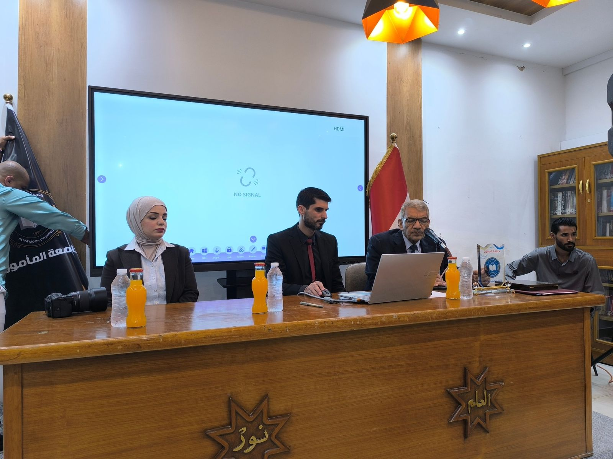
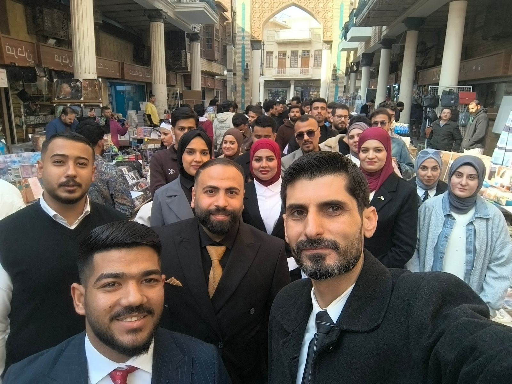
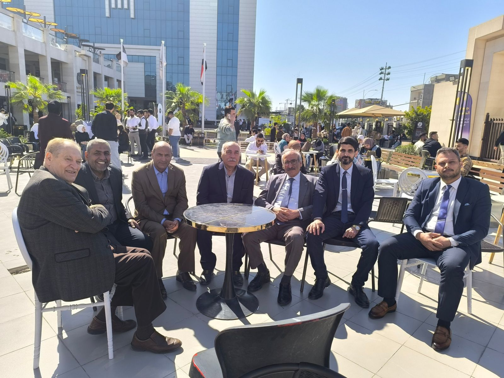
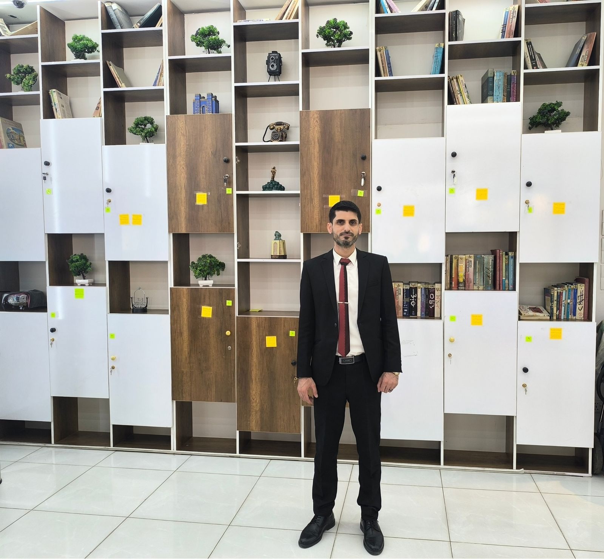
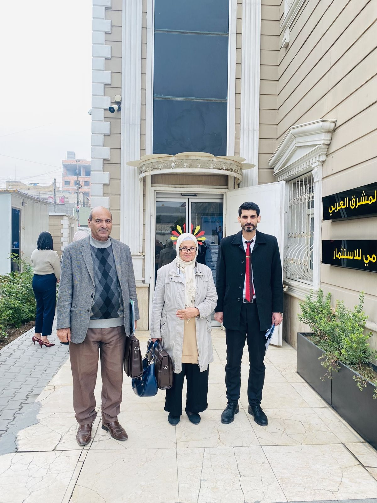
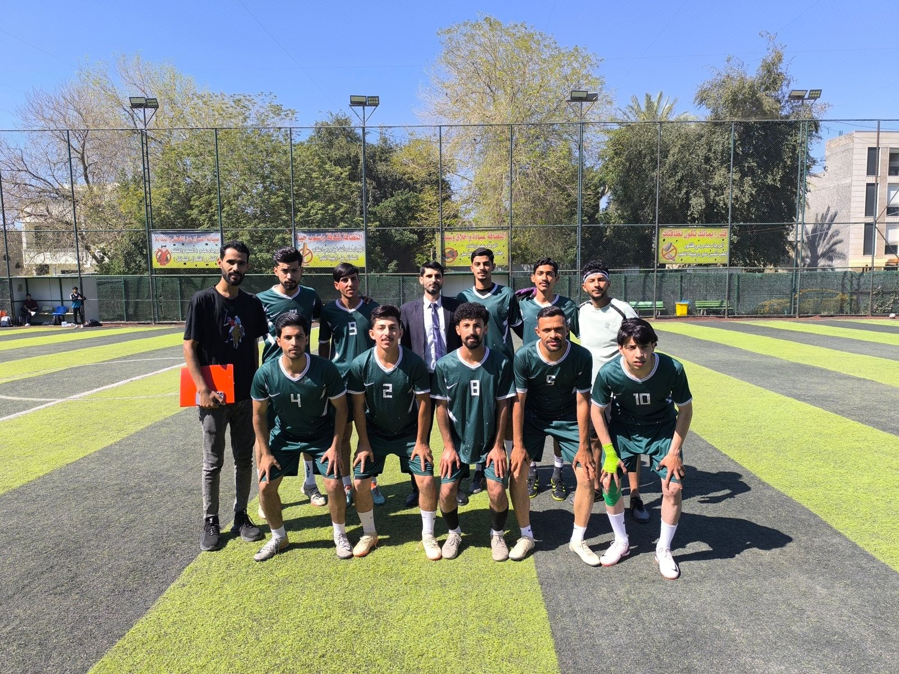
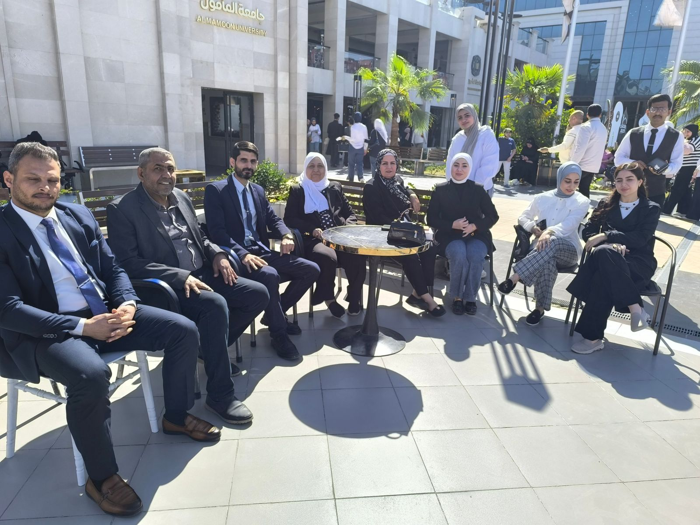
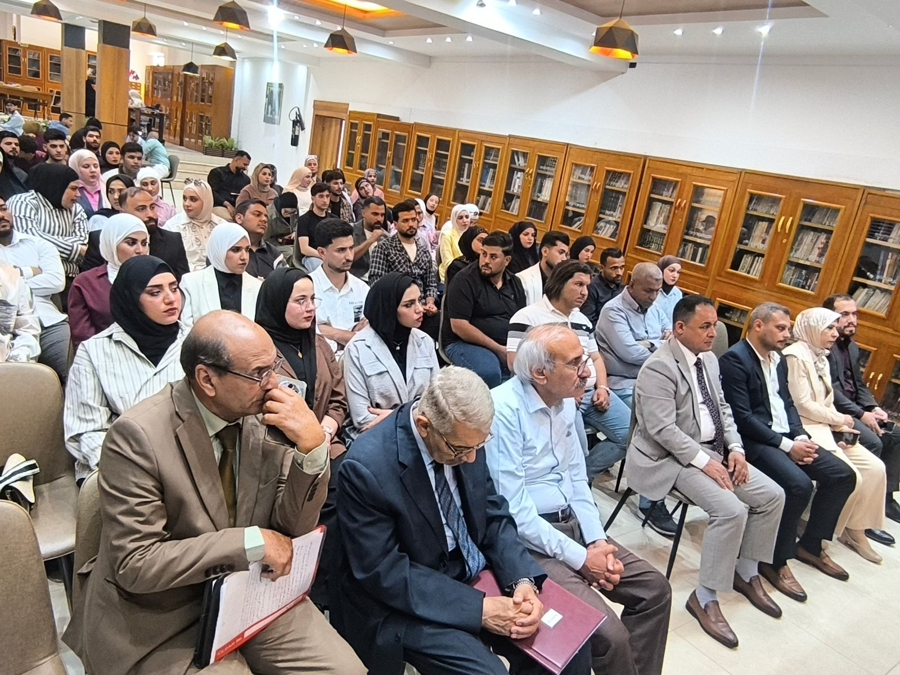
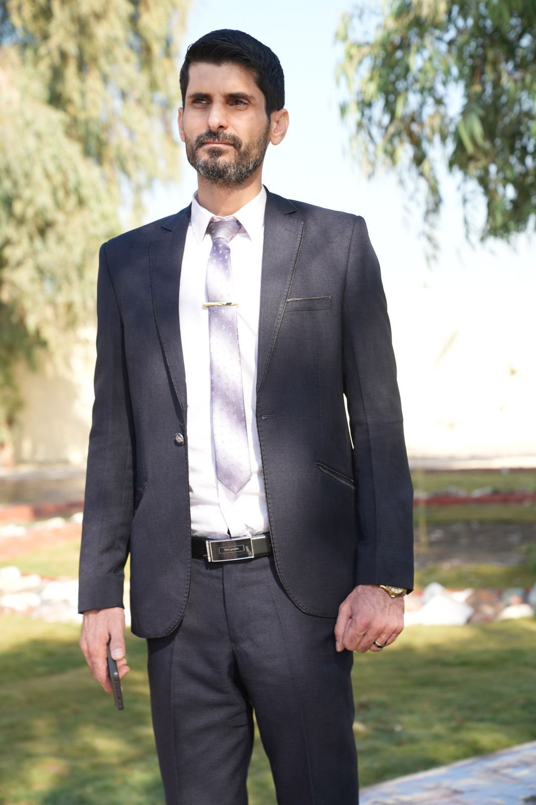
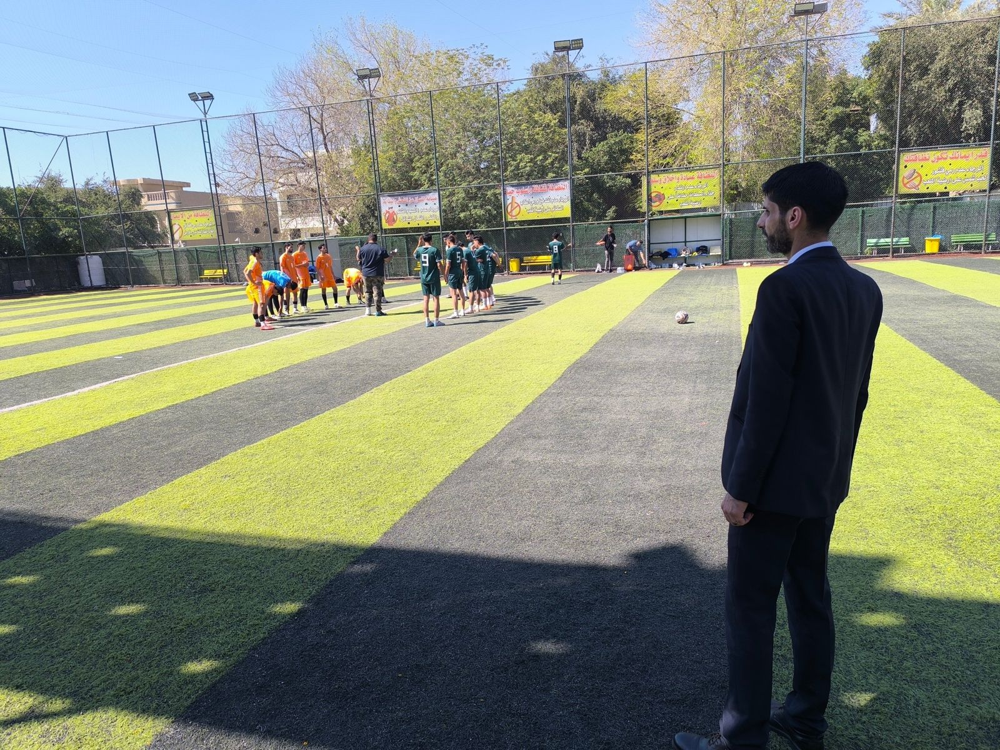
تواصل
تواصل معي
للتعاون الأكاديمي والبحثي، أو الاستشارات في سلاسل التوريد ودراسات الجدوى، أو الدعوة إلى ندوات وورش عمل.
البريد الشخصيsalsalkanaan1990@gmail.com
البريد الرسمي (الجامعة)salsal.s.kanaan@almamonuc.edu.iq
لينكدإنlinkedin.com/in/dr-salsal-kanaan
الموقعبغداد، العراق
هل تريد نسخة من سيرتي الذاتية؟
حمّل السيرة الكاملة بصيغة PDF باللغة العربية أو الإنجليزية.